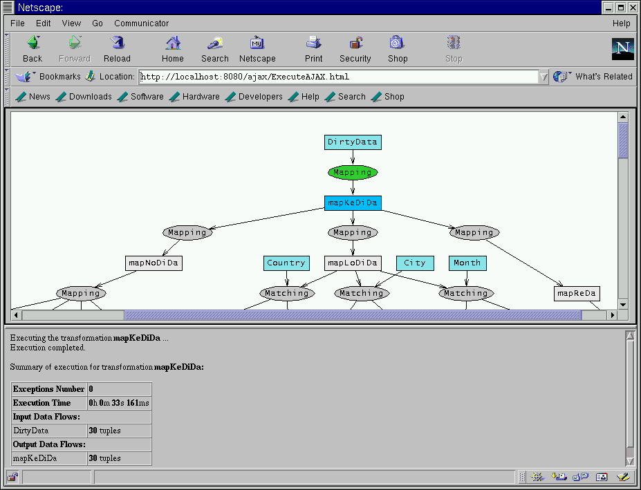

|
When it finishes, the summary of the execution is shown in the frame below the graph.
The color of the ellipse turns to green since there was no exception thrown during the execution. The rectangle representing the output data flow changes to blue meaning that it contains tuples.

|
|